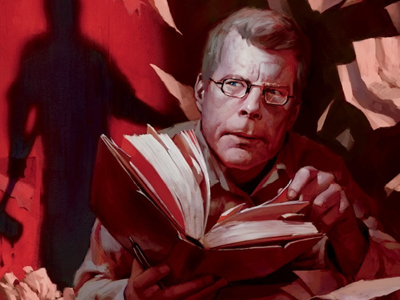

О нашем магазине
Адрес:

Наш офис находится по адресу: улица Профессора Попова, 5.
Всезнайка
Заказывайте книги одним кликом!
Стивен Кинг
Как Стивену Кингу удается передавать такую жуткую атмосферу?

Полное интервью с великим писателем
В основном ваши сюжеты наполнены мистикой и ужасами. Что привело вас именно к этим жанрам?
Он уже был создан. Вот и все. Первый фильм, который я посмотрел, это был фильм ужасов. А именно - Бэмби. Когда маленькие оленята попадают в лесной пожар, я был просто в ужасе, хотя мне было одновременно и весело. Я не могу это объяснить. Моя жена и дети пьют кофе, а я нет, я больше люблю чай. Их даже не заставишь даже просто прикоснуться к еде с анчоусами, а вот я их обожаю. Я под завязку набит всякими странностями, которые в итоги и составляют меня.
Вам когда-нибудь бывает стыдно за то, что пугаете народ?
Нет. Как по мне, пугать людей - это весело. И социально приемлемо, взять к примеру огромную кучу фильмы ужасов. Да к тому же я вырос на таких комиксах как The Crypt of Terror.
Начав писать ужасы, вы вошли в наименее уважаемый жанр в литературе.
Ага. Это один из жанров, которые живут самостоятельно вне литературного сообщества, но что я мог поделать? Меня тянуло к нему. Мне нравится Д.Г. Лауренса. И поэзия Джеймса Дики, Эмиль Золя, Стейнбека... немного Фицжеральда. А Хемингуэй не для всех. Хемингуэй отстой, в основном. Если люди такое любят, ну и ладно. Но если бы я задался целью писать в таком стиле, то мои работы были бы пустыми и безжизненными, и это был бы уже не я. Что я этим хотел сказать - я лучше всего пишу в жанре ужасов.
Книжный интернет-магазин Всезнайка. © 2019